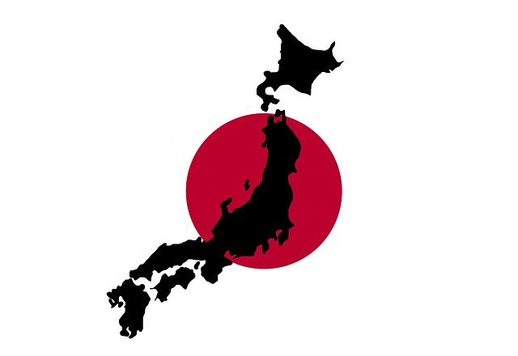
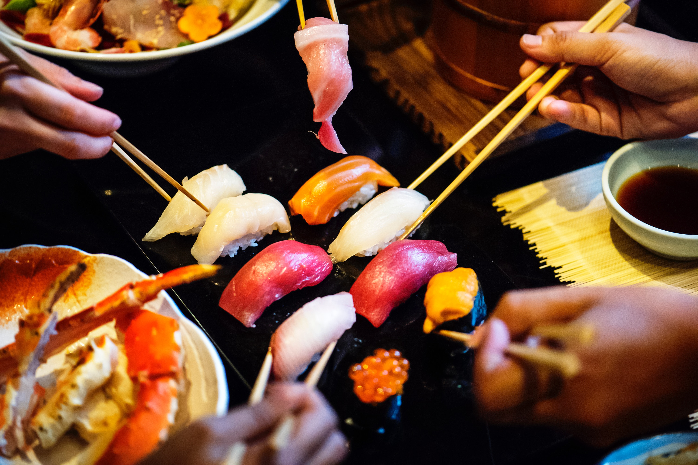
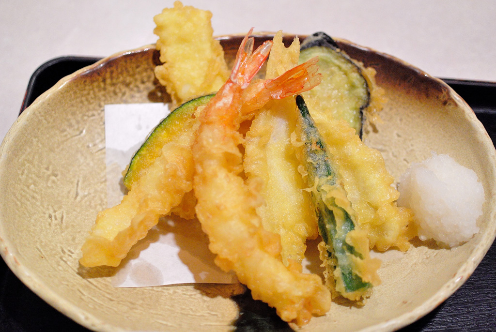
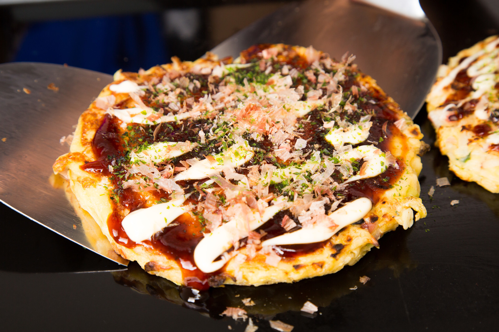

Welcome to Japan

Japan is a country located in East Asia. The formal country name is "Nippon-koku" or "Nihon-koku", the capital city is Tokyo. The national flag by law is "Hinomaru", a red sun on a white background, symmetrical top to bottom as well as left to right. The national anthem is "Kimigayo" which is derived from a traditional Japanese song written in the Heian Period (794-1185). The total area of Japan is 377,960sqkm. The population is 127,187,000 (as of Feb 2014, by Ministry of International Affairs). The official language is Japanese. English is used at up-market hotels and restaurants that cater for foreigners, although the use in general is extremely limited. The current Emperor is Akihito (125th Emperor) and the Prime Minister is Shinzo Abe. Politics follow the constitution. The Emperor is a hereditary monarch and is "a symbol of Japan and a symbol of national integration by the Japanese." The constitution recognises freedom of religion and a national religion does not exist. Many do not follow any religion. According to a survey carried out by the Ministry of Education, 1,939,613 people follow Shinto, 85,138,694 people follow Buddhism, 1,908,479 people are Christian and 9,114,049 follow other religions (as of 2012).
Best 5 places to visit in Japan

1. Tokyo
Tokyo offers a seemingly unlimited choice of shopping, entertainment, culture and dining to its visitors. The city's history can be appreciated in districts such as Asakusa and in many excellent museums, historic temples and gardens. Contrary to common perception, Tokyo also offers a number of attractive green spaces in the city center and within relatively short train rides at its outskirts.
2. Osaka
Osaka is Japan's second largest metropolitan area after Tokyo. It has been the economic powerhouse of the Kansai Region for many centuries. Osaka was formerly known as Naniwa. Before the Nara Period, when the capital used to be moved with the reign of each new emperor, Naniwa was once Japan's capital city.Also Osaka is famous for their original cuisines such as Takoyaki,Okonomiyaki.
3. Kyoto
Kyoto served as Japan's capital and the emperor's residence from 794 until 1868. It is one of the country's ten largest cities with a population of 1.5 million people and a modern face.Over the centuries, Kyoto was destroyed by many wars and fires, but due to its exceptional historic value, the city was dropped from the list of target cities for the atomic bomb and escaped destruction during World War II. Countless temples, shrines and other historically priceless structures survive in the city today.
4. Fukuoka
Fukuoka is the capital city of Fukuoka Prefecture, situated on the northern shore of Japanese island Kyushu. It is the most populous city on the island. Fukuoka is in very convinient location to travel to Asia. As of 2015, Fukuoka is Japan’s sixth largest city, having passed the population of Kobe.Fukuoka is being ranked in "Best city to live in the world" every year.
5. Okinawa
Okinawa is Japan's southernmost prefecture, consisting of a few dozen, small islands in the southern half of the Nansei Shoto, the island chain which stretches over about one thousand kilometers from Kyushu to Taiwan.Okinawa's climate is subtropical, with temperatures barely falling below 15 degrees in winter. The seas surrounding Okinawa's islands are considered among the world's most beautiful with coral reefs and abundant marine wildlife. Consequently, snorkeling and scuba diving are among Okinawa's top attractions.
Must try food in Japan!
Sushi
Sushi is one of the most famous Japanese foods in the world. In Japan, sushi is usually enjoyed on special occasions, such as a celebration. The freshness of raw fish on the rice is a key of this cuisine. Tsukiji Fish Market is a must visit place to get fresh sushi.
Tenpura
Tempura is a Japanese dish of battered and deep-fried fish, seafood, and vegetables.Tempura can be found in many types of restaurants across the country, where it is commonly served as a main dish, side dish or as a topping for tendon rice bowls, or udon and soba noodle dishes.
Okonomiyaki
Okonomiyaki is a popular pan fried food that consists of batter and cabbage. Selected toppings which can be anything from meat,seafood and cheese. The dish is available all over Japan, but is most popular in the west, particularly the cities of Hiroshima and Osaka